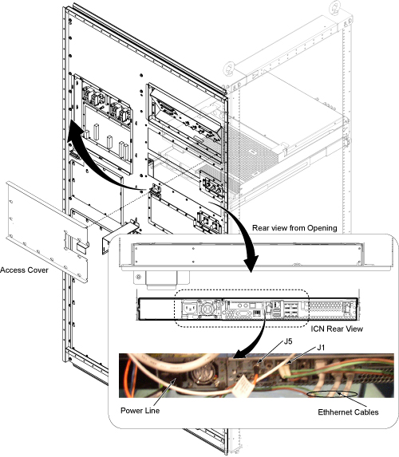
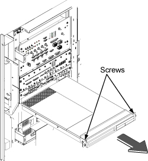
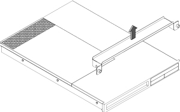

ICN Replacement (From 4100 to 4100)
Prerequisites
Procedure
- Remove L Front Cover. Refer to SC Cover Removal.
- Remove Rear Cover (Magnet Room Side). Refer to SC Cover Removal .
- Remove Rear access cover.
- Disconnect all of cables from the rear of the ICN.
Figure 1. ICN Cable Removal

- On the front of the ICN, remove the three screws and remove
ICN Noise Duct.
Figure 2. Remove ICN Noise Duct

- Loosen two screws and slide the ICN out.
Figure 3. Slide the ICN out

- Pull up and remove ICN bracket.
Figure 4. Remove Bracket

- Install ICN bracket to the new ICN.
- Insert new ICN into the Cabinet and fix by two screws.
- Restore ICN Noise Duct.
- Connect all the cables back in a reverse operation and restore covers.
Finalization
- Restore the Power. Refer to System Cabinet PDU Main Breaker LOTO Procedure.
- Perform following procedure of VRE configuration. This procedure
will take between 15-20 minutes to complete.
- With the Signa up and running, go to the service desktop and push the [Guided Install] button on the toolbar. Then, Select "FE mode" and click [start]. A Cshell will open and ask for root password ("operator" < enter> is the default) The Install GUI will load and start.
- Select "Configure VRE" and click on [Configure VRE Blades].
Figure 5. VRE Configuration

-
note:Remove log stored in '/usr/g/service/log/sensor_logs' directory as follows.
ICN error log remains even though ICN is replaced.
ICN Monitor Display shows ICN sensor logs stored in '/usr/g/service/log/sensor_logs' directory.
('ICN Monitor Display' is shown from 'MR Service Desktop/Diagnostics/VRE Subsystems/ICN Monitor Display'.)
This log is not automatically removed after ICN is replaced.
As a result, you will see error log of previouse ICN even though it is replaced to the new ICN.
By performing the following procedure, the old log will be removed.
- Open C Shell Window.
- Enter 'cd /usr/g/service/log'.
% cd /usr/g/service/log
- Enter '\cp -R sensor_logs sensor_logs.old' to make backup
of old log file.
% \cp -R sensor_logs sensor_logs.old
- 4 . Enter as follows.
% su
（enter password）
- Enter 'cd /usr/g/service/log/sensor_logs'.
% cd /usr/g/service/log/sensor_logs
- Enter 'ls -l' and hit [Enter] to check the log files. (following
is just example.)
% ls -l
-rw-r--r-- 1 root root 22680 Feb 7 15:01 12V
-rw-r--r-- 1 root root 24408 Feb 7 15:01 -12V
-rw-r--r-- 1 root root 21384 Feb 7 15:01 1.8V
-rw-r--r-- 1 root root 21384 Feb 7 15:01 3.3V
-rw-r--r-- 1 root root 20952 Feb 7 15:01 5V
-rw-r--r-- 1 root root 22032 Feb 7 15:01 Battery
-rw-r--r-- 1 root root 22896 Feb 7 15:01 CPU1
-rw-r--r-- 1 root root 22248 Feb 7 15:01 CPU1Core
-rw-r--r-- 1 root root 22248 Feb 7 15:01 CPU1DIMM
-rw-r--r-- 1 root root 22896 Feb 7 15:01 CPU2
-rw-r--r-- 1 root root 22248 Feb 7 15:01 CPU2Core
-rw-r--r-- 1 root root 22248 Feb 7 15:01 CPU2DIMM
-rw-r--r-- 1 root root 25488 Feb 7 15:01 FAN1
-rw-r--r-- 1 root root 25488 Feb 7 15:01 FAN2
-rw-r--r-- 1 root root 24840 Feb 7 15:01 FAN3
-rw-r--r-- 1 root root 24840 Feb 7 15:01 FAN4
-rw-r--r-- 1 root root 25704 Feb 7 15:01 FAN5
-rw-r--r-- 1 root root 19872 Feb 7 15:01 Intrusion
-rw-r--r-- 1 root root 20304 Feb 7 15:01 PowerSupply
-rw-r--r-- 1 root root 0 Jan 26 13:05 SEL
-rw-r--r-- 1 root root 23328 Feb 7 15:01 System
- Enter 'rm *' and hit [Enter] to remove all log files.
% rm *
- Enter as follows to exit from su.
% exit
- Log is collected every one hour. If you want to collect log
right after replacement of ICN, enter the following command.
- Enter as follows on C Shell Window.
% su
'enter password'
- Enter 'cd /export/home/signa/vre/diags'.
% cd /export/home/signa/vre/diags
- Enter as follows to collect log. It will take several seconds
to complete.
% sensors.pl
- Enter as follows to exit from su.
% exit
- Check log by ICN Monitor Display.
- Enter as follows on C Shell Window.
- Run one head or body scan.